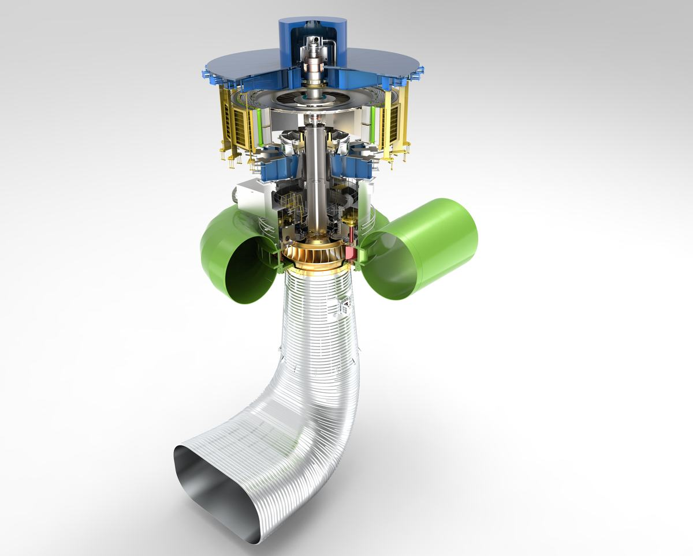
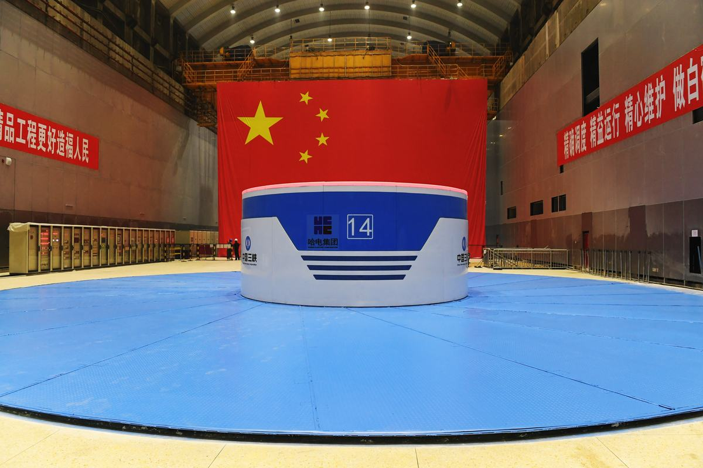
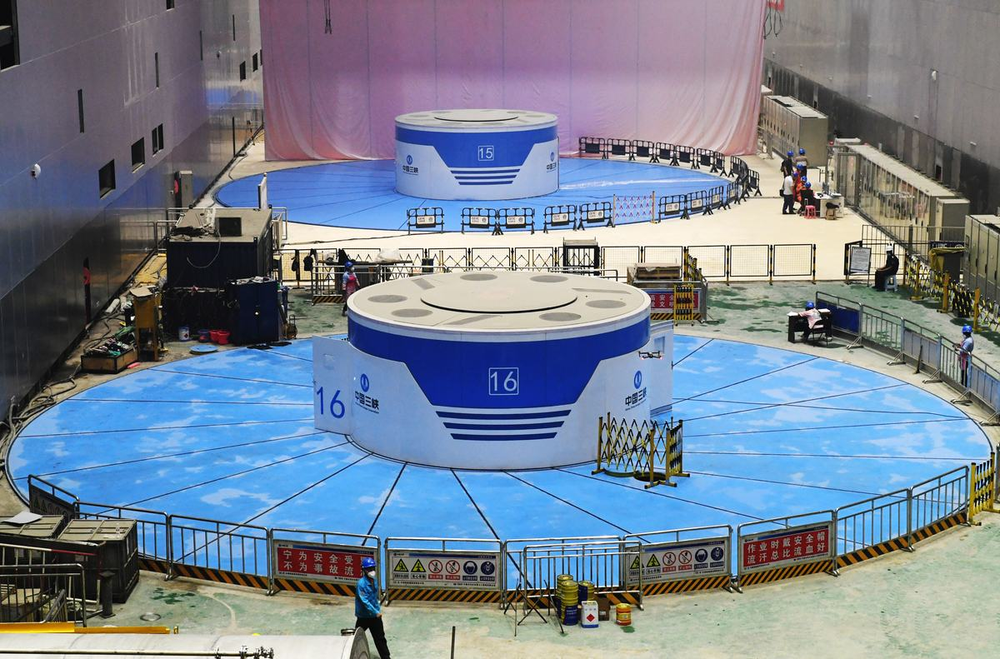

白鹤滩水电站坝址位于四川省凉山州宁南县和云南省昭通市巧家县境内的金沙江干流下游河段上，是金沙江下游干流河段梯级开发的第二个梯级电站，电站左岸和右岸各装有8台单机容量1000MW的超巨型混流式水轮发电机组，总装机容量达到16000MW，是目前世界上单机容量最大、在建规模最大、装机规模第二大的水电站。
1958年12月在全国科学规划会上，行业专家首次提出“百万水电机组”的设计制造构想，随着我国水电技术的不断发展和进步，尤其是2007年7月，水电建设史上重要里程碑-自主研制的三峡电站首台700MW水轮发电机组的顺利投运，以及溪洛渡、向家坝电站800MW等级水轮发电机组的研制成功，标志着我国已具备自主研制1000MW水电机组的技术基础，经过十余年研究，东方电机公司和哈电机公司全面攻克了白鹤滩1000MW机组设计制造难点，分别全面开展了机组的研发和制造工作。
白鹤滩电站1000MW水轮发电机组为中高水头、中低转速、巨型混流式水轮发电机组，机组运行水头高、变幅范围广、结构外形尺寸巨大。为了将白鹤滩项目打造成精品设计工程，机组采用先进的设计理念和方法，精细设计过程，采用主体部件全三维设计模式，使各部件之间的空间关系更加清晰、准确，并采用全流道的CFD优化设计及部件结构强度有限元软件分析计算。先后设计制造11个转轮模型，经过几十次模型试验，成功研发出满足高水头稳定性能要求并在低水头段具有较大超发能力的水轮机转轮，飞逸转速及无叶区压力脉动大幅降低。在吸收三峡、溪洛渡、向家坝等巨型机组的设计经验基础上，进行了大量结构设计技术攻关，取得了导水机构顶盖、底环、导叶等关键部件的设计制造以及整体装配等多项世界性技术突破，在转轮防裂纹技术、电磁设计、高效全空冷技术、发电机电磁振动分析与防治、高参数蒸发冷却技术、高速重载低损耗推力轴承技术、24kV电压等级绝缘技术、关键部件制造技术等设计领域取得了丰硕成果，实现了白鹤滩关键部件及装配指标达到或高于白鹤滩精品标准，为电站长期安全稳定运行提供了技术保障。
白鹤滩首台1000MW水轮发电机组已于2021年6月28日投入商业运行，产品性能指标优良，综合设计制造技术达到国际领先水平。白鹤滩水电站1000MW水电机组的设计成功，标志着中国水电装备制造业已经全面攻入世界水电“无人区”，中国大型装备制造业将为世界水电贡献中国方案。
（1）在设计阶段，采用先进的设计理念和方法，精细设计过程，采用主体部件全三维设计模式，使各部件之间的空间关系更加清晰、准确，并采用有限元软件进行部件结构强度分析计算。在结构方案优化提升方面，采用工地加工主立筋大平面的方案，鸽尾形复合键结构、分段磁轭结构等一系列措施，确保转子动态圆度远高于白鹤滩精品机组标准要求。并积极开展技术难题公关，在原有基础上进行再创新，通过优化推力组合轴承内部结构、采用新型油挡、分布式油雾吸收装置等，有效治理轴承油雾问题。同时，再审视、再优化，对机组外观进行工程美化设计，全方位打造美丽机电。
（2）在水力性能方面，机组的运行稳定性成为其开发设计的主要技术难关。随着机组的容量和尺寸的增大，机组过流部件中水流的能量增加，脉动能量也相应增大；另一方面，尺度的增大，水轮机结构支撑刚度下降，固有频率降低，产生共振可能性增加。创新性的采用长短叶片方案，同台对比结果水轮机最高效率、加权平均效率等综合性能指标达到了国际领先水平；空化、压力脉动、叶片背面脱流及叶道涡等性能全面优于招标要求。
（3）在推力轴承技术方面，设计并采用了低液位喷淋式润滑冷却组合轴承。新的轴承结构，大幅降低了运行润滑油液位、降低损耗约20%、大幅度降低推力轴瓦的运行温度，平均降幅10℃，增强了冷却效果，大幅提升了轴承运行的可靠性。同时在防油雾技术研究上，在设计过程中从油雾的形成、泄漏及收集装置等方面系统地进行了全面的理论及试验研究分析，设计形成了新型防油雾系统。
（4）在冷却性能方面，首次在定子局部通风和温升模拟试验研究中对发热和流动进行耦合研究，方法更先进，模拟效果更接近真机实际，开展了励磁绕组内外分区高效冷却方式应用研究。创新性的采用磁轭导风结构与磁极冷却配合的冷却结构，实现内外冷却区的精准分割，较常规冷却方式散热面积增加33%、冷却需求风量减少22％、磁极线圈的温升仅为55K，大幅降低转子线圈温升，并大幅降低了发电机内冷却空气流量，使电机通风损耗明显减小，满足了发电机高效率的要求。
（5）在绝缘设计方面，开展了1000MW水轮发电机组24kV/26kV电压等级绕组绝缘技术及仿真试验研究，通过仿真计算、绝缘性能试验、多因子老化寿命试验、整节距模拟绕组端部放电试验等研究，克服了白鹤滩高电压绝缘设计制造难关，首次提出并形成目前世界最高额定电压24千伏级空冷水轮发电机定子绕组绝缘性能的评定项目和考核标准。
（6）在金属材料方面，通过钢板材质评估、焊接性分析、焊材匹配、试验验证和焊接工艺评定等系列科学分析和验证，形成焊接规范和标准，成功解决了600MPa~800MPa等级高强钢板的焊接难题，并将800MPa等级高强钢板应用在座环和蜗壳的制造重，在座环和蜗壳同等受力边界条件下，高强钢板材料和新焊接工艺的应用，减小了座环和蜗壳设计所需板材厚度，使得蜗壳工地焊接工作量减小了约46%，大幅节约了制造成本、运输成本、缩短了工地安装的直线工期。
（7）在生产制造方面，加大工艺创新力度，通过采用先进加工技术、优化安装工艺、应用智能制造技术和新材料等措施，逐项突破工程技术难题。通过引进自动化CMT焊接机器人工作站，实现了机组轴瓦部件巴氏合金层高效、智能、绿色制造。通过引进光学数字测量系统，提升了转轮水力尺寸测量精度，转轮叶片安放角度控制精度提升2倍。通过自主创新，研发出新型可剥离复合涂层，既满足运输防锈要求，又具有良好的可剥离性。转轮在“零配重”的情况下顺利通过验收，这是国际上首台“零配重”通过验收的巨型长短叶片水轮发电机组转轮，标志着1000MW水轮机转轮在整体平衡方面达到了极高的制造水平。

